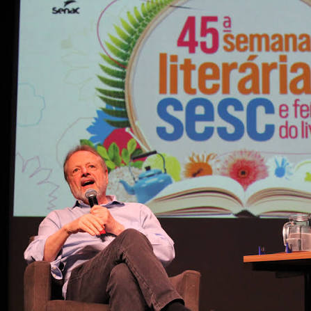

Biografia
Cristovão Tezza nasceu em Lages, Santa Catarina, em 1952. Em 1961, sua família estabeleceu residência definitiva na cidade de Curitiba, Paraná. A capital paranaense converteu-se no ambiente geográfico, social e ficcional mais vital de toda a sua literatura de acervo, onde reside até os dias de hoje.
Sua sólida formação artística e acadêmica inclui a passagem pelo Centro Capela de Artes Populares (CECAP) na juventude, estudos literários realizados na Universidade de Coimbra durante a Revolução dos Cravos em Portugal, e a docência estável como professor de Literatura Brasileira na Universidade Federal do Paraná (UFPR). Em 2001, obteve o título de doutor pela Universidade de São Paulo (USP). No ano de 2009, desligou-se das atividades universitárias para dedicar-se à criação romanesca.
Obras
-
O Filho Eterno (2007)
Romance autobiográfico consagrado internacionalmente, vencedor dos prêmios Jabuti, APCA, Bravo! e Portugal Telecom de Literatura.
-
Trapo (1988)
Obra em formato de correspondência epistolar que marcou a consolidação e projeção crítica do autor no ecossistema nacional.
-
Visita ao Pai (2024)
Narrativa de autoficção contemporânea que investiga os labirintos da memória familiar sob o cenário urbano do Sul.
Crítica
"A ficção contemporânea de Cristovão Tezza equilibra de forma magistral o rigor formal clássico com uma investigação psicológica cortante das relações humanas." — Caderno de Resenhas Acadêmicas.
"Tezza constrói em sua prosa uma topografia afetiva de Curitiba que transcende o espaço urbano, transformando a cidade em personagem de suas autoficções." — Revista Estudos de Letras.
Fotografias
.jpg)
Estudos na Universidade de Coimbra (Anos 70)

Atividade de Docência Universitária (UFPR)
Textos
-
A Máquina de Caminhar (Crônicas)
Reflexões editoriais sobre o cotidiano, a produção de arte e a caminhada literária nas metrópoles modernas.
-
Ensaio Acadêmico: Literatura e Autoficção
Análise teórica sobre os limites entre a memória biográfica real e a construção textual romanesca.
Entrevistas
-
Entrevista Especial: O Processo da Escrita Contemporânea
Reflexões aprofundadas sobre o impulso de transformar memórias, autoficção e sentimentos em literatura ficcional de alto valor intelectual.
Canais Oficiais
Conecte-se ao ecossistema literário e acadêmico do autor através dos canais oficiais ativos: